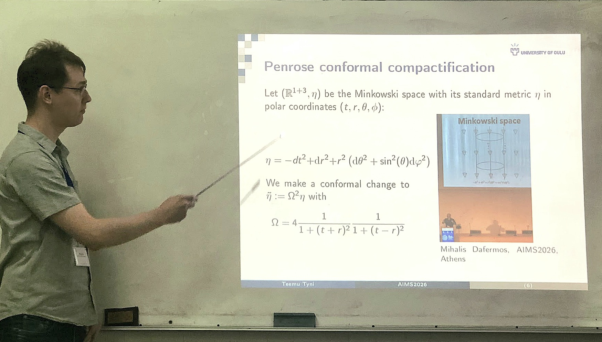

Research
My current research interest is broadly in mathematical physics and in particular inverse problems.
Recently I have been interested in Riemannian and Lorentzian geometry and I study nonlinear elliptic and hyperbolic equations in this abstract setting.
Some model equations (and their variants) that I study are the nonlinear wave equation $(\partial_t^2-\Delta_g) u + q(u)=0$ and various Schrödinger type equations of the form $\Delta_g u + q(u)=0$, where $\Delta_g$ is the Laplace-Beltrami operator.
I also work on numerical implementations of the theoretical results.
I did my PhD work on elliptic biharmonic problems i.e. differential and integral, linear and non-linear, equations involving the bi-Laplacian $\Delta^2$.
During my PhD I studied operators of the form $H_4:= \Delta^2 + \vec{q}\cdot\nabla + V$ where $\vec{q}$ and $V$ are functions from some suitable function spaces.
I teach and supervise theses at the Applied and Computational Mathematics (ACM) group in Oulu.

The following subjects (in no particular order) are close to my heart
- Mathematical physics: scattering theory
- Inverse problems
- Topics of partial differential equations, operator theory, integral equations
- Differential geometry
- Numerical implementations
Publications and other things
()
Preprints
- El Maddah K, Lassas M, Liimatainen T, Pohjola V, and Tyni T, Reconstruction for an inverse scattering problem with a Kerr type nonlinearity, Preprint June 2026 pdf
- El Maddah K, Lassas M, and Tyni T, Numerical reconstruction of Schrödinger equations with quadratic nonlinearities, Preprint December 2025 pdf
- Lassas M, Liimatainen T, Pohjola V, and Tyni T, Gaussian beam interactions and inverse source problems for nonlinear wave equations, Preprint October 2025 pdf
- Harju M, Anttila S, and Tyni T, X-ray imaging from nonlinear waves: numerical reconstruction of a cubic nonlinearity, Preprint September 2025 pdf
- Alexakis S, Isozaki H, Lassas M, and Tyni T, Inverse scattering problems for non-linear wave equations on Lorentzian manifolds, Preprint November, 2024 pdf
Peer-reviewed journal articles
Please find preprint versions of the articles by clicking the link titled "pdf" after each paper. Please note that there can be changes and corrections to the preprints in the published versions.- Lin Y-H, Tyni T, and Zimmerman P, Optimal Runge approximation for nonlocal wave equations and unique determination of polyhomogeneous nonlinearities, Calc. Var. Partial Differ. Equ.,64:280, 2025. pdf
- Lassas M, Liimatainen T, Potenciano-Machado L, and Tyni T, Stability and Lorentzian geometry for an inverse problem of a semi-linear wave equation, Analysis and PDE, 18:5, 1065–1118, 2025. pdf
- Lin Y-H, Tyni T, and Zimmerman P, Well-posedness and inverse problems for semilinear nonlocal wave equations, Nonlinear analysis, 247, 113601, 2024. pdf
- Alexakis S, Stinchcombe A R, and Tyni T, A boundary integral equation approach to electrical impedance tomography: experiments on the KTC2023 data, Applied Mathematics for Modern Challenges, 2024. pdf
- Tyni T, Stinchcombe A R, and Alexakis S, A boundary integral equation method for the complete electrode model in electrical impedance tomography with tests on real-world data, SIAM J. Imag. Sci., 17:1, 2024., pdf
- Covi G, Railo J, Tyni T, and Zimmerman P, Stability estimates for the inverse fractional conductivity problem, SIAM J. Math. Anal. 56:2, DOI: 10.1137/22M1533542, 2024. pdf
- Lassas M, Liimatainen T, Potenciano-Machado L, and Tyni T, An inverse problem for a semi-linear wave equation: a numerical study, Inverse Problems & Imaging, 18:1, 62-85, DOI:10.3934/ipi.2023022, 2024. pdf
- Lassas M, Liimatainen T, Potenciano-Machado L, and Tyni T, Uniqueness, reconstruction and stability for an inverse problem of a semi-linear wave equation, Journal of Differential Equations, 337, 395-435, DOI:10.1016/j.jde.2022.08.010, 2022. pdf
- Liimatainen T, Lin Y-H, Salo M, and Tyni T, Inverse problems for elliptic equations with fractional power type nonlinearities, Journal of Differential Equations, DOI:10.1016/j.jde.2021.10.015, 2022. pdf
- Harju M, Kultima J, Serov V, and Tyni T, Two-dimensional inverse scattering for quasi-linear biharmonic operator, Inverse Problems & Imaging, DOI:10.3934/ipi.2021026, 2021. pdf
- Brander T, Ilmavirta J, Piiroinen P, and Tyni T, Optimal recovery of a radiating source with multiple frequencies along one line, Inverse Problems & Imaging, 14:6, 967-983, 2020. pdf
- Tyni T, Numerical results for Saito's uniqueness theorem in inverse scattering theory, Inverse Problems, 35:6, 065002, 2020. pdf
- Serov V and Tyni T, Inverse medium problem for a singular contrast, Journal of Mathematical Physics 60, 111508, 2019. pdf
- Tyni T and Serov V, Inverse scattering problem for quasi-linear perturbation of the biharmonic operator on the line, Inverse Problems & Imaging 13:1, 159-175, 2019. pdf
- Tyni T, Recovery of singularities from a backscattering Born approximation for a biharmonic operator in 3D, Inverse Problems 34, 045007, 2018. pdf
- Tyni T and Serov V, Scattering problems for perturbations of the multidimensional biharmonic operator, Inverse Problems & Imaging 12:1, 205-227, 2018. pdf
- Tyni T and Harju M, Inverse backscattering problem for perturbations of biharmonic operator, Inverse Problems 33, 105002, 2017. pdf
- Serov V and Tyni T, Inverse scattering problems for perturbed bi-harmonic operator, AIP Conference Proceedings 1776 (2016) pdf
- Tyni T, Harju M, and Serov V, Recovery of singularities in a fourth-order operator on the line from limited data, Inverse Problems 32, 075001, 2016. pdf
Grants and awards
- Since 2024 I am a PI in the FAME Flagship of Advanced Mathematics for Sensing, Imaging and Modelling.
- In 2023 I was awarded the Emil Aaltonen project grant.
- In 2021 I was awarded the Emil Aaltonen Young researcher grant.
- In 2018 I received The Finnish Inverse Prize.
Selected conference talks
- AIMS 2026 (Athens, Greece): Slides
- IPMS 2026 (Malta): Slides
- Applied Inverse Problems AIP2023 (Göttingen, Germany): Slides
- International Workshop on Operator Theory and its Applications IWOTA2023 (Finland)
- Inverse Problems: Modeling and Simulation 2022 (Malta)
- International Zoom Inverse Problems seminar 2022 (UCI) (Link to the talk)
- Inverse Problems and Nonlinearity 2021 (Helsinki, Finland) (Link to the talk)
Organizing conferences
- Lead organizer of the Oulu session of the Living the DREAM -seminar 2026.
- Main organizer, together with prof. A. Hauptmann, of Inverse Days 2024 in Oulu.
- Organizer of Minisymposium M46 at the AIP2023 conference in Göttingen, Germany
- Organizer of Minisymposium M27 at the IPMS2022 conference in Malta
- Member of the local organizing committee for Inverse Problems and Nonlinearity 2020 (Helsinki).
- Local organizer for Inverse Days 2017 (Oulu).